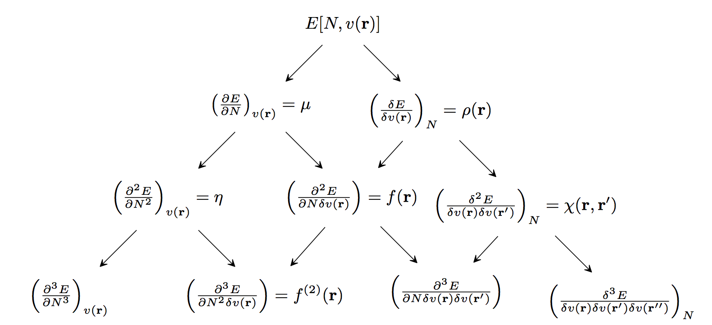

Conceptual Density Functional Theory¶
Conceptual Density Functional Theory (DFT) provides chemists with a hierarchy of well-defined chemical concepts that contribute to the qualitative understanding and quantitative prediction of chemical reactivity. When a molecule undergoes a reaction, its number of electrons increases (nucleophilic attack) or decreases (electrophilic attack). Also, the external potential felt by the electrons in the molecule changes, because now the electrons are not only attracted to the nuclei of the molecule, but also attracted to the nuclei and repelled by the electrons of the attacking reagent. Therefore, the susceptibility of a molecule to chemical reactions is determined by its response to changes in the (a) number of electrons and (b) the external potential. This hierarchy of molecular responses, which are the fundamental reactivity indicators of conceptual DFT, is summarized in the following diagram.

Global descriptors measure the overall susceptibility of a system to different types of reactions, e.g., electrophilic or nucleophilic attacks. The leftmost entries in each row of the above figure are global descriptors. The second-from-the-left entries in the figure are local descriptors. Local descriptors show where a molecule is most susceptible to different types of reagents; they are regioselectivity indicators. Coarse-graining of local descriptors (by integrating their values over atomic or functional-group regions) gives condensed descriptors, which identify the atoms, functional groups, or bonds that are most reactive. The remaining entries in the figure are non-local descriptors. Non-local descriptors provide information about how the properties/reactivity of a molecule at one point change in response to changes (e.g., due to an attacking reagent) elsewhere in the molecule. They can also be condensed, giving response matrices (2nd-order non-local descriptors) and response tensors (high-order responses).
When computing conceptual DFT descriptors associated with electron transfer, one must choose an energy model for the dependence of the energy upon the number of electrons. At the simplest level, one can choose to describe these changes using the frontier molecular orbital (FMO) energies. Alternatively, one can compute the change in energy due to electron donation/acceptance directly, as finite differences (FD) between the \(N-\) electron system’s energy and the energies of the \(\left(N-1\right)\) and \(\left(N+1\right)\) electron systems,
\[\begin{split}IP = E\left(N - 1\right) - E\left(N\right) \approx -\varepsilon_{\text{HOMO}} \\ EA = E\left(N\right) - E\left(N + 1\right) \approx -\varepsilon_{\text{LUMO}}\end{split}\]
where HOMO denotes the highest occupied molecular orbital and LUMO denotes the lowest unoccupied molecular orbital.
Once energies for the systems with integer electron number have been modelled using either the FMO or FD approaches, a continuous model for the energy as a function of the number of electrons should be chosen. Popular choices include the piecewise linear model, [1]J.P. Perdew, R.G. Parr, M. Levy, and J.L. Jr. Balduz. Density-functional theory for fractional particle number: derivative discontinuities of the energy. Phys. Rev. Lett., 49(23):1691–1694, 1982.[2]P.W. Ayers. The dependence on and continuity of the energy and other molecular properties with respect to the number of electrons. J. Math. Chem., 43(1):285–303, 2008. the quadratic model, [3]R.G. Parr, R.A. Donnelly, M. Levy, and W.E. Palke. Electronegativity: the density functional viewpoint. J. Chem. Phys., 68(8):3801–3807, 1978.[4]R.G. Parr and R.G. Pearson. Absolute hardness: companion parameter to absolute electronegativity. J. Am. Chem. Soc., 105(26):7512–7516, 1983., the exponential model, [5]R.G. Parr and L.J. Bartolotti. On the geometric mean principle for electronegativity equalization. J. Am. Chem. Soc., 104(14):3801–3803, 1982.[6]P. Fuentealba and C. Cardenas. On the exponential model for energy with respect to number of electrons. J. Mol. Model., 19(7):2849–2853, 2013. and the rational model. [7]F. Heidar-Zadeh, R Alain Miranda-Quintana, T. Verstraelen, P. Bultinck, and P.W. Ayers. When is the fukui function not normalized? the danger of inconsistent energy interpolation models in density functional theory. J. Chem. Theory Comput., 12(12):5777–5787, 2016. Of these, the piecewise linear model is the most mathematically rigorous and the quadratic model is the most popular (and perhaps the most useful). The exponential and rational models have undesirable mathematical properties and one should be especially wary about using them for local descriptors.